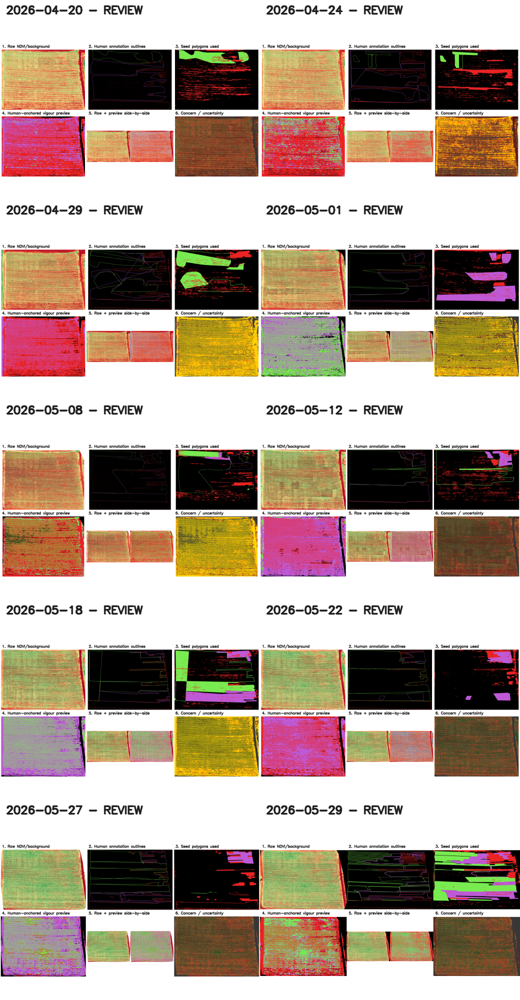
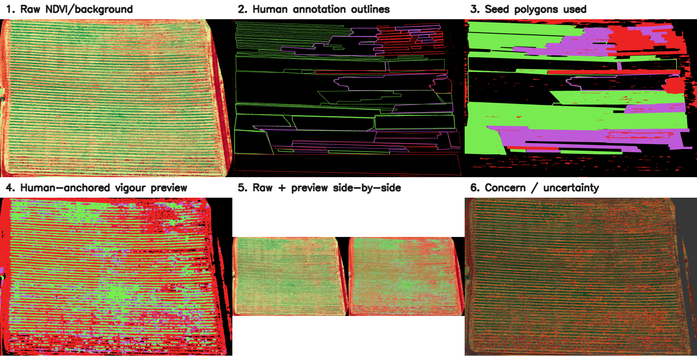

1. Latest Human-Anchored Vigour Preview

2. Date Timeline

3. Human Annotation Reference

4. Preview vs Raw NDVI

5. Concern / Uncertainty

6. Technical Audit Note
Generated from human-marked regions and rendered NDVI colour response. For scouting prioritization only. Not a disease diagnosis or validated automatic classification.
RGB-derived NDVI proxy separability was previously tested and did not support a validated full-field automatic classification. These previews stay anchored to human-marked regions and are exploratory.
| Date | Status | Seed pixels | Preview pixels | Weak uncertainty | Disagreement | Review reason |
|---|---|---|---|---|---|---|
| 2026-04-20 | REVIEW | 1316104 | 5654660 | 8.93% | 15.89% | annotated image resized to raw |
| 2026-04-24 | REVIEW | 816949 | 5315993 | 40.83% | 16.64% | high weak-margin uncertainty; annotated image resized to raw |
| 2026-04-29 | REVIEW | 1624572 | 5572762 | 71.59% | 7.23% | high weak-margin uncertainty; annotated image resized to raw |
| 2026-05-01 | REVIEW | 1636521 | 5225203 | 57.04% | 7.09% | high weak-margin uncertainty; annotated image resized to raw |
| 2026-05-08 | REVIEW | 1311770 | 8654559 | 67.26% | 6.07% | high weak-margin uncertainty; annotated image resized to raw |
| 2026-05-12 | REVIEW | 783175 | 5396527 | 3.83% | 11.28% | annotated image resized to raw |
| 2026-05-18 | REVIEW | 2302450 | 5191244 | 63.75% | 5.37% | high weak-margin uncertainty; annotated image resized to raw |
| 2026-05-22 | REVIEW | 695484 | 5193340 | 6.95% | 11.83% | annotated image resized to raw |
| 2026-05-27 | REVIEW | 584048 | 4991190 | 6.91% | 17.90% | annotated image resized to raw |
| 2026-05-29 | REVIEW | 3357253 | 5166481 | 6.58% | 12.40% | annotated image resized to raw |
Six-Panel Latest Proof
